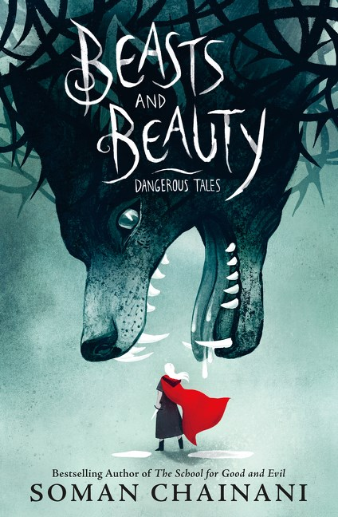

I wanted to do something different with my TBR. Last month, I actually read (or at least attempted) all of the books that I intended to from the TBR stack that I created.I decided to turn my TBR into a series. It will work a little differently from a regular TBR. Instead of trying to finish it in a month, there isn’t a hard deadline. Typically,my goal will be to read the selected books within at least six weeks, if it takes longer. Oh well. I will be picking books from my shelf and my kindle. So what makes these books any different than the books that I pick up throughout the month? Sometimes I get distracted. One of my main goals has been to read my own books, but that doesn’t always seem to happen. So these TBR episodes will help me make progress on that goal no matter what else distracts me. What can you expect: Every episode will begin with the results from books selected in a previous episode and then the selections for the next episode. Books may be selected for a special theme or because Ive been meaning to pick them up. They will all be books that I own, either as a print or kindle book.
For Results of Episode 00, click here.Starr's Book Lair
"Sleeping on a dragon's hoard with greedy, dragonish thoughts in his heart, he had become a dragon himself." ― C.S. Lewis, The Voyage of the Dawn Treader
The Hoard


Tackling My TBR Season 1